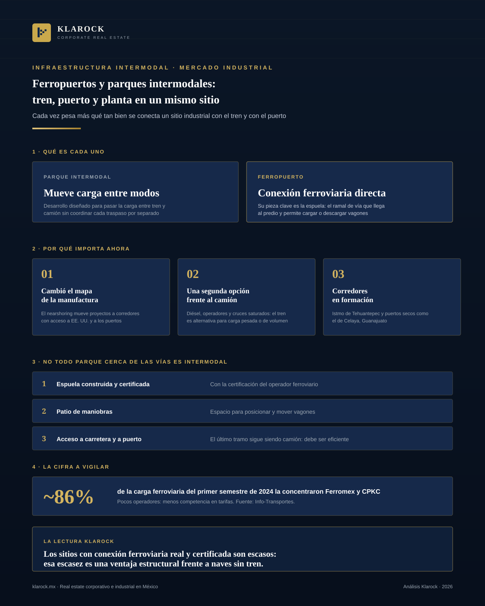

Industrial · 2026-10-20
Ferropuertos y parques intermodales: la infraestructura que conecta tren, puerto y planta
La discusión sobre naves industriales en México suele centrarse en metros cuadrados y rentas. Cada vez pesa más otra variable: qué tan bien se conecta un sitio con el tren y con el puerto.

Resumen ejecutivo
La discusión sobre naves industriales en México suele centrarse en metros cuadrados y rentas. Cada vez pesa más otra variable: qué tan bien se conecta un sitio con el tren y con el puerto. Los ferropuertos y los parques intermodales, es decir, los sitios donde el ferrocarril, el camión y el puerto se encuentran dentro o junto a un parque industrial, están pasando de ser una curiosidad a ser un criterio de selección de ubicación.
Este artículo explica qué son, por qué importan ahora, qué deben evaluar los inquilinos e inversionistas y qué riesgos conviene revisar antes de decidir.
1. Qué es un ferropuerto y qué es un parque intermodal
Un parque intermodal es un desarrollo industrial o logístico diseñado para mover la carga entre dos o más modos de transporte, por ejemplo tren y camión, sin que el cliente tenga que coordinar cada traspaso por separado.
Un ferropuerto es un sitio con conexión ferroviaria directa y capacidad de transferir carga entre el tren y otros modos. Su elemento clave es la espuela, el ramal de vía que llega hasta el predio y permite cargar o descargar vagones dentro de la propiedad.
No todo parque "cerca de las vías" es intermodal. La diferencia está en tres puntos:
- —Si la espuela existe, está construida y cuenta con la certificación del operador ferroviario.
- —Si hay patio de maniobras y espacio para posicionar vagones.
- —Si el sitio tiene acceso eficiente a carretera y, cuando aplica, al puerto.
2. Por qué importa ahora
Cambió el mapa de la manufactura. El nearshoring ha movido proyectos hacia corredores donde la conexión con Estados Unidos y con los puertos define los costos logísticos. El Plan México contempla impulsar polos de desarrollo y parques industriales en el país, y los desarrolladores proyectan nuevas inversiones en parques para 2026 (fuentes al final).
Las cadenas de suministro piden alternativas. Depender solo del camión expone a los costos del diésel, a la escasez de operadores y a la congestión en cruces fronterizos. El tren no sustituye al camión, pero sí da una segunda opción para cargas pesadas o de volumen: granos, insumos industriales, automotriz, materiales de construcción y productos terminados de gran tamaño.
Los grandes corredores están tomando forma. El Corredor Interoceánico del Istmo de Tehuantepec y los nodos tipo "puerto seco", como el que se consolida en Celaya, Guanajuato, muestran hacia dónde se orienta la inversión pública y privada: sitios donde se consolida, almacena y redistribuye carga usando tren y carretera.
3. El caso del noroeste: Topolobampo y el corredor al Pacífico
El noroeste ofrece un ejemplo concreto. El Ferrocarril Chihuahua al Pacífico une la ciudad de Chihuahua con Topolobampo, en Sinaloa. Ferromex lo adquirió en 1998. Existe servicio de carga regular entre ambos puntos.
Topolobampo es además el inicio del corredor comercial La Entrada al Pacífico, que lo vincula con Midland-Odessa, Texas. Para la industria del norte y noroeste del país, esto abre una salida al Pacífico y al comercio con Asia que no pasa por los puertos más saturados.
En ese entorno, un predio de gran superficie con espuela de ferrocarril certificada por el operador y acceso directo a la carretera México 15 es un activo poco común. Un sitio de este tipo atiende a una demanda específica: empresas con volúmenes de carga ferroviaria que necesitan un punto de transferencia en la región, como agroindustria, cerveza y bebidas, fertilizantes, automotriz o materiales.
4. Qué debe evaluar un inquilino o inversionista
- 1.Estado y certificación de la espuela. Confirmar con el operador ferroviario que la vía cumple con las especificaciones y que está habilitada para el servicio.
- 2.Acuerdos de servicio con el ferrocarril. La espuela por sí sola no basta. Hay que revisar frecuencia, tarifas, tiempos y capacidad de posicionamiento de carros.
- 3.Espacio de maniobra. Radios de giro, longitud útil de vía y área de almacenamiento.
- 4.Conectividad carretera. El tren resuelve el trayecto largo, pero el último tramo sigue siendo camión.
- 5.Servicios y energía. Disponibilidad de electricidad, agua y, si aplica, régimen de recinto fiscalizado.
- 6.Costo total, no solo renta. Comparar renta por metro cuadrado contra el ahorro logístico por tonelada transportada.
- 7.Régimen legal y de uso de suelo. Revisar gravámenes, derechos de vía, zonificación y permisos.
5. Riesgos y consideraciones
- —Concentración del servicio. Pocas empresas operan la red ferroviaria de carga en México: Ferromex y CPKC concentraron cerca del 86% de la carga en el primer semestre de 2024 según reportes de prensa especializada. Esto limita la competencia en tarifas.
- —Dependencia de un solo cliente. Un parque diseñado para un uso muy específico puede ser difícil de reposicionar.
- —Plazos de obra y permisos. Construir o ampliar una espuela requiere autorizaciones y coordinación con el operador.
- —Políticas públicas. La orientación del gobierno hacia el tren de carga y de pasajeros puede cambiar prioridades de inversión.
6. Perspectiva Klarock
Los sitios con conexión ferroviaria real y certificada son escasos, y eso les da una ventaja estructural frente a naves comparables sin acceso al tren. A medida que se consolidan los corredores y la demanda de logística de volumen crece, esperamos que los ferropuertos y los parques intermodales ganen peso dentro de la selección de ubicación industrial.
Si su empresa está evaluando una expansión que dependa del ferrocarril, o si es propietaria de un sitio con espuela y quiere conocer su posicionamiento en el mercado, el equipo de Klarock puede acompañarle en el análisis de ubicación y en la representación de la operación.
Para una conversación sobre selección de sitio industrial, contáctenos al 668 189 4960.
Fuentes consultadas
- —Ferromex adquirió el Ferrocarril Chihuahua al Pacífico en 1998 y existe servicio de carga entre Topolobampo y Chihuahua: Wikipedia, Ferrocarril Chihuahua al Pacífico; Wikipedia, Topolobampo
- —Participación de Ferromex y CPKC en la carga ferroviaria, primer semestre de 2024: Info-Transportes
- —Plan México, polos de desarrollo y parques industriales: Nearshoring dispara nueva ola de parques industriales; Inmobiliare, Corredor Interoceánico
- —Celaya como puerto seco: American Industrial Magazine
¿Te interesa esta oportunidad?
Escríbenos y un socio director te contactará en menos de 24 horas hábiles.
Contactar a un Socio Director